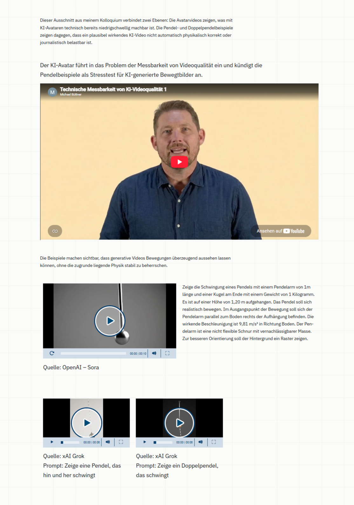

Agentisches Arbeiten ist aktuell en Vogue. Privatpersonen lassen ihre Mails von der KI verarbeiten, Anbieter überschlagen sich mit Automationen, in denen die KI nicht nur repetitive Arbeiten ausführt, sondern auch komplexe Entscheidungen trifft, Werkzeuge selbst auswählt und die eigene Arbeit schlussendlich auch kontrolliert und korrigiert. Doch der Preis dafür kann hoch sein. Damit meine ich aber nicht den Preis des Kontrollverlustes oder des Datenschutzes. Ich spreche vom schnöden Mammon.
Je nach Aufgabe verbraucht KI unterschiedlich viel. Reines Chatten, Coden in einer abgeschlossenen und begrenzten Entwicklungsumgebung, Erstellen von Text und Beratung über ein RAG sind vergleichsweise kleine Verbrauchsszenarien. Doch lässt man die KI in einer komplexen Umgebung Oberflächen bedienen, kann der Verbrauch schnell entgleiten. Wie man an diesem praktischen Beispiel sehen kann.
Kontext und Aufgabe
Aktuell arbeite ich daran, meine Seite auf verschiedene CMS zu migrieren, damit ich Erfahrungs-Defizite in diesem Bereich ausgleichen kann. Ich habe sehr viel Erfahrung in der prinzipiellen Steuerung von Content Management Systemen und speziell bei Wordpress habe ich einige Migrationen und tiefgreifende Weiterentwicklungen redaktionell verantwortet. Bei Typo3 oder Headless-CMS dagegen bin ich relativ unerfahren. Deshalb kopiere ich aktuell meine Website auf den GSB11, entwickelt vom ITZBund und basierend auf Typo3.
Dabei habe ich die Einrichtung des Hostings, die Server-Einstellungen und die Installation von GSB11 mit der Anleitung von OpenAI Codex erledigt. Technische Umsetzungen von Codex lagen bei den Änderungen von Schriftart, Farbpalette und anderen kleinen CSS-Umbauten. Dazu hat Codex einen Inhaltsblock technisch leicht modifiziert. Das alles kostete eine überschaubare Menge an Kapazität meines Plus-Accounts. Doch dann habe ich eine repetitive Aufgabe erteilt: “Bau den Bereich "KI-Avatare und messbare Videoqualität" so in das CMS, wie der Block in der github-seite zu sehen ist. ACHTUNG: Kein Coding, keine Änderung der Technik, nur mit den vom GSB bereitgestellten Mitteln oder unseren bisherigen Veränderungen einbauen.” Diese Aufgabe würde mir, obwohl ich wenig Erfahrung mit GSB11 oder Typo3 habe, maximal 20 Minuten konzentrierte Arbeit kosten. Codex hat länger gebraucht. Nicht nur, weil es viele Schleifen dreht, die Arbeitsschritte sehr klein ansetzt und sich in der CMS-Oberfläche nur schlecht orientieren kann, sondern auch, weil diese unscheinbare Aufgabe gleich zwei 5-Stunden-Kontingente meines Abonnements (OpenAI Plus) in Codex mit GPT6 “Gering” benötigt hat. Und dann war Codex noch nicht fertig.
Um es deutlicher zu machen: Diese Liste zeigt die Änderungen eines ganzen 5-Stunden-Kontingents:
| ID | Element | Änderung |
|---|---|---|
| 91 | Video | „Teil 1: Avatar als Einführung“ mit Beschreibung und erstem YouTube-Avatarvideo eingebunden. |
| 92 | Text | „Pendel als Stresstest: Wenn KI-Video an Physik scheitert“ samt Einleitung angelegt. |
| 93 | Raster | Zweispaltiges Raster für Sora-Video und Prompt angelegt. |
| 94 | Video | pendel-sora.mp4 hochgeladen und mit Quellenangabe „OpenAI - Sora“ eingebunden. |
| 95 | Text | Den vollständigen Sora-Prompt neben dem Video eingefügt. |
| 96 | Raster | Dreispaltiges Raster für die Grok-Beispiele angelegt. |
| 97 | Video | pendel-grok-einfach.mp4 hochgeladen und mit Quellenangabe und Prompt eingebunden. |
| 98 | Video | doppelpendel-grok.mp4 hochgeladen und mit Quellenangabe und Prompt eingebunden. |
Das Ergebnis der Bearbeitung:

Erfahrung und Schlussfolgerung
Ein kleineres Modell anstatt GPT-6 Astra in der Einstellung “Gering” hätte den Verbrauch nur bedingt reduziert. Das Problem ist die laut Codex/ChatGPT so entstanden:
“Der Aufwand entstand durch die vielen Schleifen: Oberfläche lesen → nächsten Schritt entscheiden → klicken → Ergebnis prüfen. Dazu kamen umfangreiche Oberflächenbeschreibungen, Wiederholungen und unser langer Gesprächskontext. Auch meine Durchführung war dabei zu kleinteilig.”
In diesem Fall war der größte Hebel also nicht das Modell, sondern die Kontextgröße und die Aufgabenverteilung. Während ich mit meiner allgemeinen CMS-Erfahrung schnell und konkret Probleme in der Bedienung des CMS erkennen und darauf intuitiv reagieren kann, hat Codex jeden Ablaufschritt, jede Entscheidung, jeden Prüfpunkt mit dem großen Kontext der Entwicklung abgeglichen. Hier ist der Mensch noch klar im Vorteil, weil er ein klareres Bewusstsein darüber hat, was im Kontext wichtig und unwichtig ist. Die KI kann gegenüber mir viel besser Code schreiben und technische Probleme lösen, was hier aber eben nicht gefragt war. Also gilt: Erst den Arbeitsauftrag klären, dann das beste Mittel wählen und erst dann die Arbeit starten.